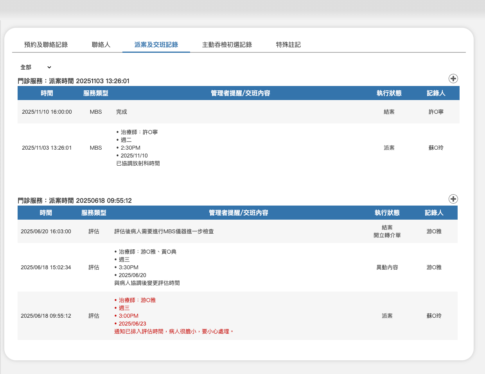
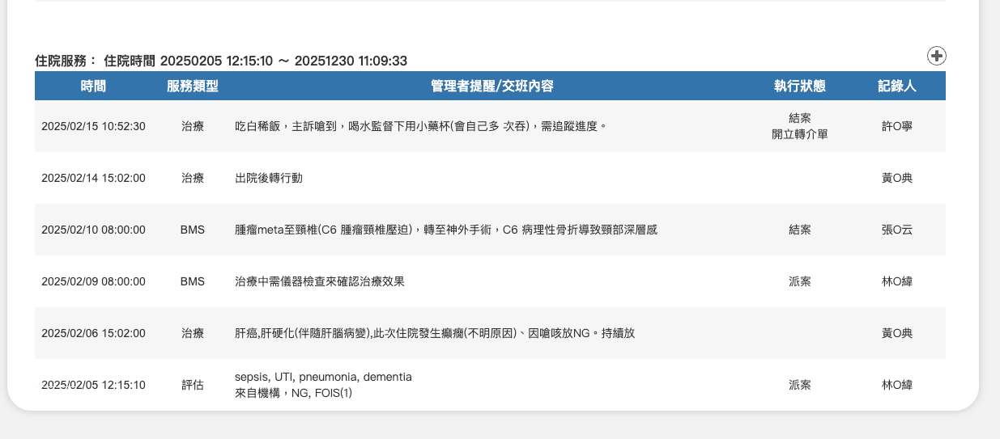

03-1-2-3 派案及交班記錄



項目
內容
說明
資料來源及關聯規則
1. 資料來源("01-1-2 門診派案/排課”、”01-2-2 住院派案/排課”、"02-3-4 媒合派案”及”02-1-2 交班記錄")：
- 手動點選平台內有門診或住院門診派案/排課的輸入頁，並填寫相關派案資訊儲存後，在此頁面新增一筆派案資料。
- 可開啟派案/排課功能的頁面如下：
- 01-1 門診待排名單
- 01-2 住院待排名單
- 02-2 每日任務
- 02-3 課表看版(02-3-2 治療師單一時段記事(閒置或保留)、02-3-3 治療師單一時段記事(有任務)）
- 有派案資料後，可以開始記錄該案後續的交班及結案記錄。
- 可輸入交班記錄的頁面
- 02-1 任務總覽
- 02-2 每日任務
2. 點選單筆資料可進行內容編輯
3. 門診及住院資料記錄方式不同：
- 門診每種服務類型分開記錄，從派案→治療師服務過程的交班記錄→結案為一組，同一組資料可在此頁面新增交班資訊，結案後若再次有相同的服務被派案，則建立一組新的記錄。
- 住院服務以住院起迄為一組，不限制結案次數，住院期間不分服務類型依每次記錄時間由新排列到舊來呈現。
4. 每組資料結案或者出院後，不顯示右上新增資料的按鈕。
年份篩選
- 2026
～
- 2021
篩選結果是每組記錄的最後一筆時間。

記錄派案來源及時間
1. 門診服務
2. 住院服務

記錄欄位項目
時間
填寫派案或交班記錄當下的時間
格式 yyyy/mm/dd hh:mm:ss
服務類型
服務類型(若是醫師開單對應批價碼，若由治療師發起預約則顯示治療師選擇的類型)
- 治療
- 評估
- 檢查
- MBS
- FEES
管理者提醒/交班內容
多行文字內容最多顯示500個全形文字，顯示資訊如下：
1. 派案時填寫的資料內容都要顯示：
- 執行治療師姓名
- 任務時間(星期/時間/日期)
- 派案或轉派者備註文字
2. 交班記錄：
沒有填寫任何派案或轉派資訊，只有在備註欄填寫的文字內容。
執行狀態
1. 狀態分為幾類：
- 派案：首次派案的狀態。
- 異動內容：派案後由派案者或主責治療師異動派案內容(例如上課時間)，新增一筆記錄，不覆蓋首次派案那筆資料。
- 結案：由主責治療師在我的任務頁進行結案操作後，記錄一筆派案及交班記錄。
- 已填轉介單：主責治療師在操作結案介面時若有勾選已填轉介單，在結案狀態下方多顯示的資訊。
2. 住院每日都會更換主責治療師，因此在病人出院前，記錄中會有多位治療師派案及結案的狀態。
記錄人
每筆資料記錄者姓名。
01-1-2 門診派案/排課
01-2-2 住院派案/排課